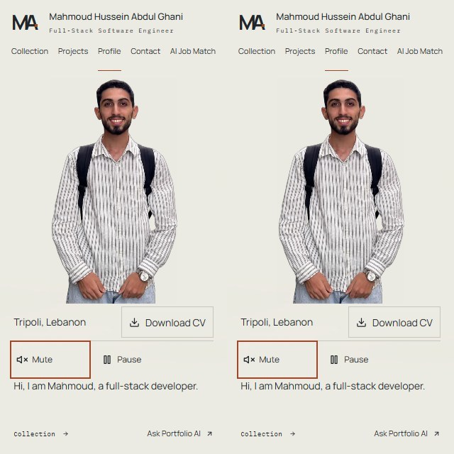
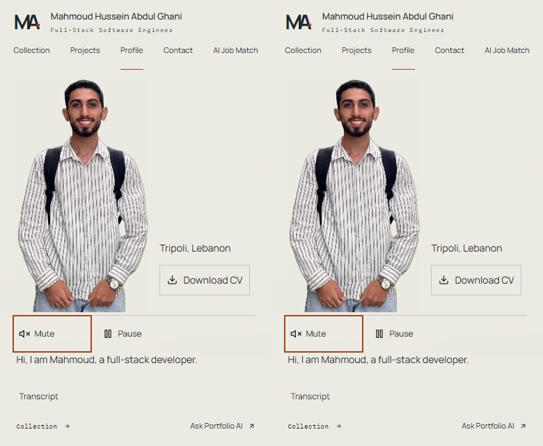
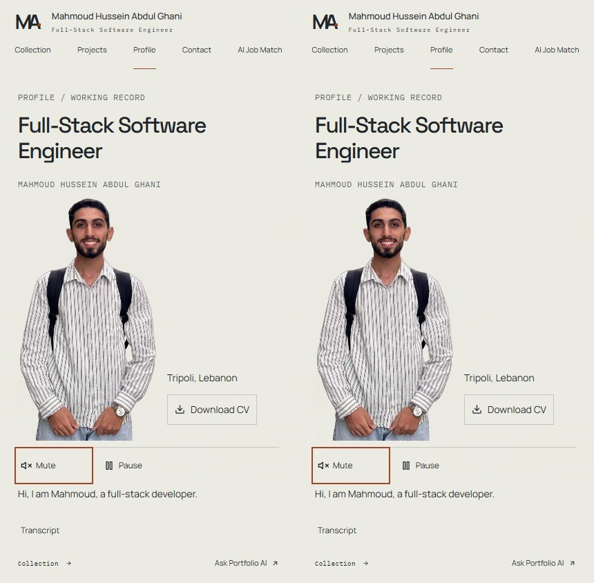
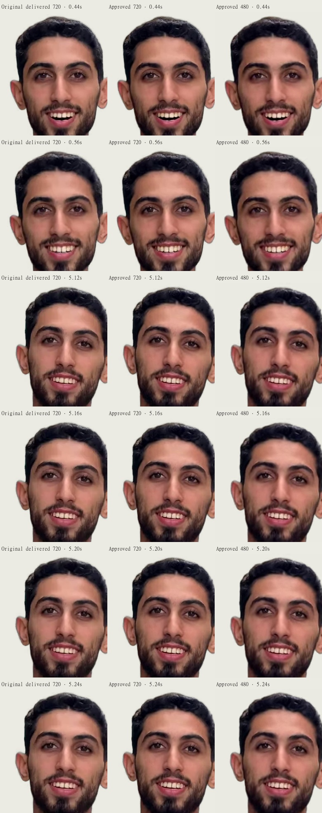
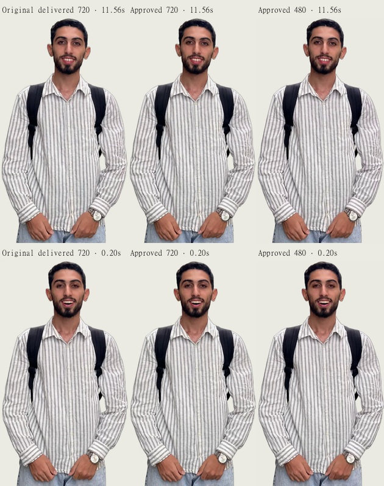
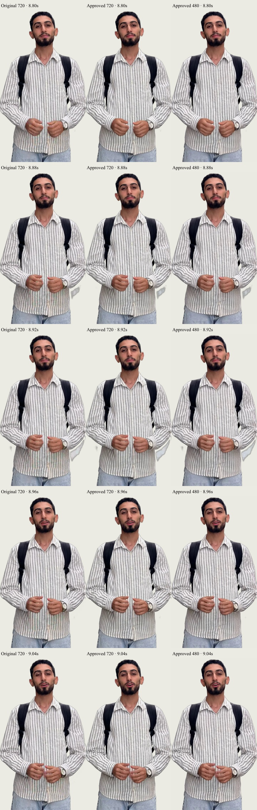
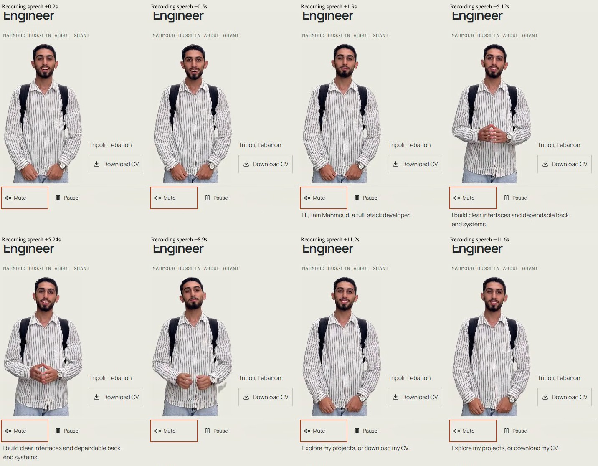
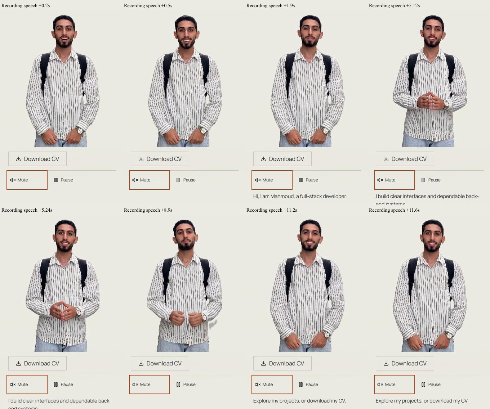

Compiled baseline PR #42 at 767db8207fcaa0bc973bc65f9dbe519ba2e7afab. The assets, layout and controls are unchanged. The controller waits for native enough-data readiness and refreshes its 15-second watchdog only when the buffered range advances.
Tradeoff: longer still before movement, fewer interruptions. No bandwidth or startup-speed improvement is claimed. At 400kbps the extended cold tests first reveal video at about 43/90 seconds for media-only and 85/132 seconds for whole-page loading. Native readiness is an estimate; partial-cache visits can still refill. The page and existing controls remain usable.
Windows Chrome emulation with real decoding and frozen GET fixtures; no physical-device/live-CDN verification. Videos are sampled browser screenshots exported at 25fps, with approved audio aligned to measured speech origin, not hardware-rate/system-audio capture or direct audio audition. Small pose cut, teeth appearance and source matte debris remain. No face/voice regeneration or media replacement.



Compiled local Vite Preview, native HTTP cache/ranges, frozen GET fixtures; independent CDP throttles, not live CDN/device performance. Normal is unthrottled loopback. Warm primary visits may have partial media cache. Extended warm visits follow completed cold media loads. Startup and loop-seek waits are excluded from in-take waits.
| Video | Kbps | Scope | Visit | Before frame | After frame | In-take waits | End state |
|---|---|---|---|---|---|---|---|
| 480 | loopback | whole-page | cold | 1.205s | 1.243s | 0 → 0 | looping → looping |
| 480 | loopback | media-only | cold | 0.394s | 0.302s | 0 → 0 | looping → looping |
| 480 | loopback | whole-page | warm | 0.861s | 0.971s | 0 → 0 | looping → looping |
| 480 | loopback | media-only | warm | 0.163s | 0.2s | 0 → 0 | looping → looping |
| 480 | 1500 | whole-page | cold | 13.819s | 16.482s | 3 → 0 | looping → looping |
| 480 | 1500 | media-only | cold | 1.951s | 4.961s | 3 → 0 | looping → looping |
| 480 | 1500 | whole-page | warm | 2.022s | 1.887s | 0 → 0 | looping → looping |
| 480 | 400 | whole-page | cold | 45.967s | > observation | 4 → 0 | loading → loading |
| 480 | 1500 | media-only | warm | 0.676s | 0.358s | 0 → 0 | looping → looping |
| 720 | loopback | whole-page | cold | 1.108s | 1.352s | 0 → 0 | looping → looping |
| 480 | 400 | media-only | cold | 4.604s | 43.309s | 4 → 0 | error → looping |
| 720 | loopback | whole-page | warm | 1.078s | 1.112s | 0 → 0 | looping → looping |
| 720 | loopback | media-only | cold | 0.205s | 0.289s | 0 → 0 | looping → looping |
| 480 | 400 | whole-page | warm | 2.911s | 2.842s | 4 → 1 | looping → looping |
| 720 | loopback | media-only | warm | 0.324s | 0.419s | 0 → 0 | looping → looping |
| 480 | 400 | media-only | warm | 0.547s | 0.387s | 4 → 0 | looping → looping |
| 720 | 1500 | whole-page | cold | 14.249s | 28.319s | 4 → 0 | looping → looping |
| 720 | 1500 | media-only | cold | 2.274s | 16.128s | 5 → 0 | looping → looping |
| 720 | 1500 | whole-page | warm | 2.442s | 2.399s | 0 → 0 | looping → looping |
| 720 | 1500 | media-only | warm | 0.541s | 0.383s | 0 → 0 | looping → looping |
| 720 | 400 | whole-page | cold | 47.66s | > observation | 3 → 0 | looping → loading |
| 720 | 400 | media-only | cold | 6.157s | > observation | 4 → 0 | error → loading |
| 720 | 400 | whole-page | warm | 2.96s | 2.827s | 3 → 1 | error → loading |
| 720 | 400 | media-only | warm | 0.682s | 0.568s | 4 → 1 | error → looping |
Summary / extended recovery · Baseline raw events · Final raw events · Extended 400kbps raw events · Unchanged asset/component hashes · Layout / CV validation · Source provenance · Changed files
Teeth-boundary appearance at 0.44–0.56 and 5.12–5.24 seconds already occurs in the older delivered encode. Pre-encode e536e2cf master unavailable, limiting generation/earlier-encoding attribution. Detached grey fragments at 8.88/8.92 seconds are present across all three delivered encodes and the desktop recording, rather than a runtime facial overlap. Recommend separate exterior-alpha review of 8.80–9.04 seconds; no asset is changed here. A new approved human take with compatible neutral start/end poses would be needed if the facial performance/cut is unacceptable.




